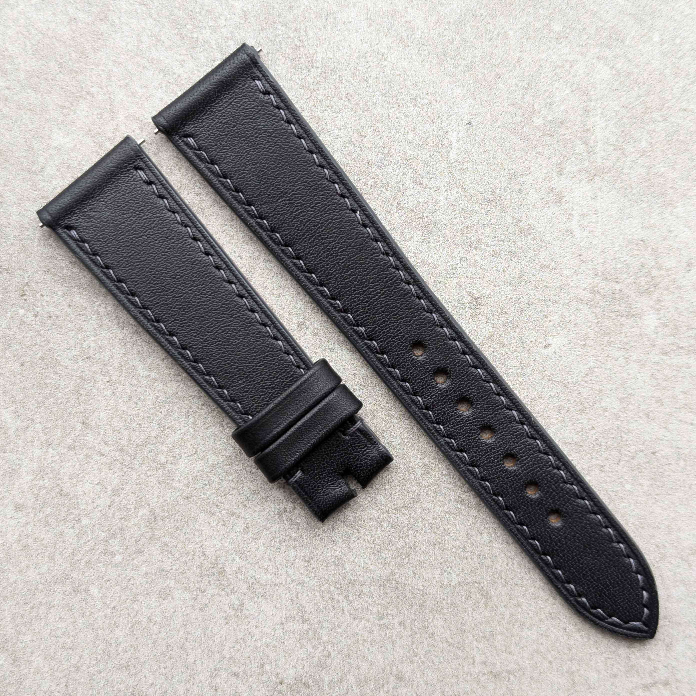
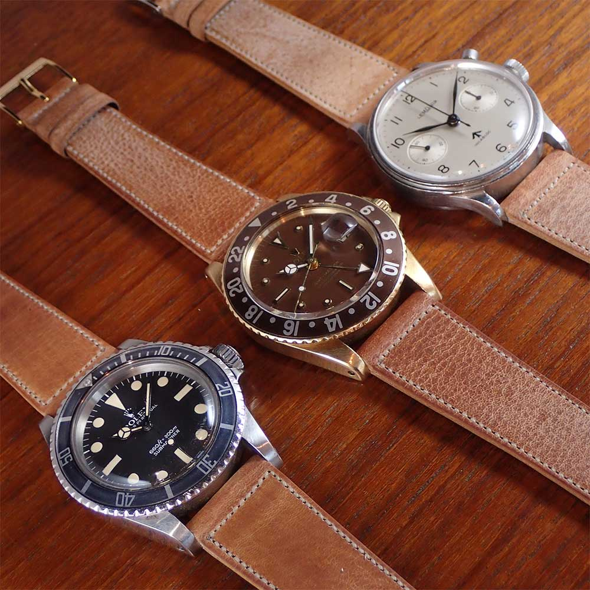

Leather Tanning Explained: Vegetable-Tanned vs. Chrome-Tanned Watch Straps
Ever wondered what makes one leather watch strap feel different from another, or why two similar straps have vastly different price tags? The secret often lies in the tanning process, the method used to turn animal hide into the material we know as leather. The two most common methods are vegetable tanning and chrome tanning, and they produce leathers with specific qualities that directly impact the durability, feel, and cost of a strap.
 Nenad Pantelic • August 7, 2025
Nenad Pantelic • August 7, 2025
What is Leather Tanning?
Vegetable Tanning (Veg-Tanned): This is the old-school, traditional method. It uses natural tannins found in organic materials like tree bark, leaves, and fruits. The hides are soaked in large vats filled with these tannins for weeks, and sometimes even months. This slow, gentle process is more environmentally friendly but requires a high level of craftsmanship.
Chrome Tanning: Developed during the industrial revolution, this is the modern, faster, and more common method, accounting for over 90% of the world's leather. It uses chromium salts and other chemicals to tan the hide, a process that can be completed in as little as a day.
How Tanning Affects Your Watch Strap?
The tanning method has a fairly significant impact on the final characteristics of your leather strap, from how it ages to how much it costs.
Durability and Feel
Vegetable-tanned leather starts out stiffer and more rigid. But with time and wear, it softens and becomes more supple, molding to your wrist for a comfortable fit. The veg-tanned leather can develop a beautiful patina. For sure, it's very durable and can last for decades with proper care, but it is more susceptible to water damage and staining if not treated.
Chrome-tanned leather, on the other hand, is soft and pliable from the very beginning. It is more resistant to water, stains, and heat, making it a more "low-maintenance" option. But, it doesn't develop the same kind of character or patina as veg-tanned leather. Also, some people may also experience skin irritation due to the chemicals used in the tanning process.
Price
The difference in production time and labor directly translates to the price of the final product.
Vegetable-tanned watch straps are generally more expensive. The lengthy and artisanal nature of the tanning process requires more time, skill, and resources, all of which contribute to a higher cost.
Chrome-tanned watch straps are typically more affordable. The speed and efficiency of the chrome tanning process make it ideal for mass production, resulting in a lower price point for the consumer.

Tanning Methods of Legendary Tanneries
Here is a look at the tanning methods used by some of the most respected names in the industry.
Horween Leather Company (USA)
A giant in the American leather landscape, Chicago's Horween is well-known for its diverse range of high-quality leathers.They are masters of multiple tanning processes, often combining methods to create their signature products.
Combination Tanning: Horween's most famous leather, Chromexcel, is a prime example of combination tanning. It undergoes a process that includes both chrome tanning and a heavy vegetable retannage. This gives it the "best of both worlds": the suppleness and durability of chrome-tanned leather, with the potential to develop a rich, beautiful patina characteristic of vegetable-tanned leather.
Vegetable Tanning: Horween is also one of the few tanneries in the world that still produces genuine Shell Cordovan. This leather is made using a slow, traditional vegetable tanning process that can take multiple months to complete.
Badalassi Carlo (Italy)
Located in Tuscany, the Badalassi Carlo tannery is a celebrated member of the "Consorzio Vera Pelle Italiana Conciata al Vegetale" (The Genuine Italian Vegetable-Tanned Leather Consortium).
Vegetable Tanning: Badalassi exclusively uses traditional vegetable tanning methods. They are famous for their rustic, full-grain leathers like "Pueblo" and "Minerva Box," which are tanned using natural tannins from sources like quebracho and chestnut trees. This process results in leathers with a distinct texture and an exceptional ability to develop a deep patina over time.
Tanneries Haas (France)
Established in 1842, the French tannery Haas is a premier supplier to the world's most luxurious handbag and accessory brands. They are known for their exceptionally soft and high-quality calfskins.
Double Tanning: Haas often employs a "double tanning" process for some of its signature leathers, such as Barenia. This method involves both chrome tanning and vegetable tanning. The result is a leather that is both soft and supple from the start, but also durable and capable of developing a unique patina. This hybrid approach gives their leathers a distinctive feel and aging quality.

Charles F. Stead & Co. Ltd (United Kingdom)
This Leeds-based tannery is widely regarded as one of the world's finest producers of suede and other specialty leathers.
Chrome Tanning: Charles F. Stead is particularly famous for its suedes. The process for creating these exceptionally soft and napped leathers typically involves chrome tanning. This method is well-suited for producing the consistent color and plush texture that their suedes are known for. They are also known for producing unique leathers from hides like the African antelope (Kudu), which are also chrome-tanned.
Conceria La Perla Azzurra (Italy)
Another esteemed member of the Tuscan vegetable-tanned leather consortium, La Perla Azzurra has a long-standing reputation for producing vibrant and high-quality leathers.
Vegetable Tanning: True to its Tuscan roots, La Perla Azzurra specializes in vegetable-tanned leather. They produce a wide array of colors and finishes. Their leathers are known for their rich colors and classic veg-tan characteristics.

TURGUT (Turkey)
Representing the robust Turkish leather industry, Turgut Kardeşler Deri is a significant producer of a wide variety of leathers.
Multiple Methods: Turgut appears to use a range of tanning methods to cater to diverse market needs. While they produce "semi-vegetable" tanned leathers, they are also explicitly noted for using chrome tanning for many of their products. This versatility allows them to produce leathers with different properties, from soft and consistent chrome-tanned hides to leathers with some of the characteristics of vegetable tanning.
Conceria Virgilio (Italy)
Also known as Virgilio Conceria Artigiana, this Italian tannery is another practitioner of traditional Tuscan leather-making.
Vegetable Tanning: Virgilio is dedicated to the art of vegetable tanning. They are known for producing leathers with a unique, soft temper and a natural appearance. Their process involves using a lighter bath of tannins over a longer period, resulting in a less aggressive tan and a very supple final product with a low environmental impact.
Making Your Choice
As you and me know, the watch strap world is full of romantic marketing terms: "genuine," "premium," "hand-selected." Yes, I admit, these phrases sound cool, but these words often serve as a curtain, hiding the details that define a strap's quality and character. The real story is not always in the brand's logo or in the fancy copywriting. A logo tells you who is selling it, but the materials and production methods tell you what you are actually buying.
If you appreciate traditional craftsmanship, a product that ages with you, and are willing to invest a bit more, a veg-tanned strap is an excellent choice. If you prioritize a softer feel from day one, a wider variety of colors, and a more budget-friendly price, a chrome-tanned strap might be the better fit for your wrist.
With an understanding of vegetable, chrome, and combination tanning, I hope you can now look past the hype. At least you can now figure out whether a higher price tag reflects a time-honored artisanal process or simply a clever marketing budget. I hope you are no longer just buying what you are told is good.